An end-to-end redesign of CarGurus' internal A/B and multivariate testing platform, from a clearer status workflow to a more scannable admin overview.
A powerful testing tool that nobody could read at a glance.
As a UX Design Intern at CarGurus, I worked on the internal platform teams use to run A/B and multivariate tests. The old workflow had five statuses, Created, Initialized, Active, Inactive, Archived, and treated a test's entire life as one long "Active" phase. A test running at 1% of traffic looked identical, status-wise, to one fully ramped and being watched for real results.
The work broke into three parts: information architecture, defining the new statuses and how they relate; interaction model, mapping how a test moves from one status to the next; and UI redesign, rebuilding the interface around that workflow.
I started by digging into the three power users of this tool, PMs, analysts, and engineers, mapping out each one's responsibilities and where their pain points showed up. From there, I traced a full flow of where each role enters and exits a test's lifecycle, which made it clear the existing status list didn't match how any of them actually worked.
To pressure-test that mapping, I workshopped several workflow iterations with stakeholders from all three groups and used their input to converge on a structure that would hold up for people using it every day. I also ran one-on-one interviews to get more candid, specific feedback than a workshop setting allows, which gave me real data to back up the design decisions in the final workflow.
Defined seven statuses in place of the old five, each mapped to a real moment in a test's life: initial setup, small-scale validation, full experimentation, an intentional hold, and the two possible outcomes before archiving.
Mapped exactly how and when a test can move between statuses, including who is responsible for that transition, an engineer, an analyst, or the system itself, and designed how that action is actually taken in the UI and how the interface reflects it back.
Rebuilt the interface around the new workflow so a test's current status, and what can happen to it next, is clear without digging into its history.
The admin overview is where users go to look up a specific test, so the redesign focused on making it scannable and surfacing the right information in each field.
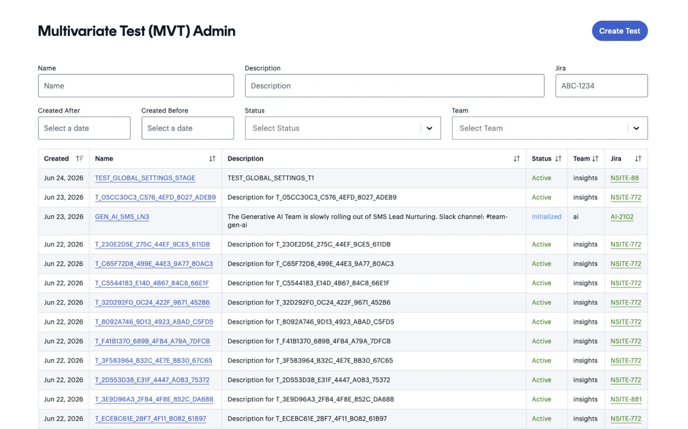
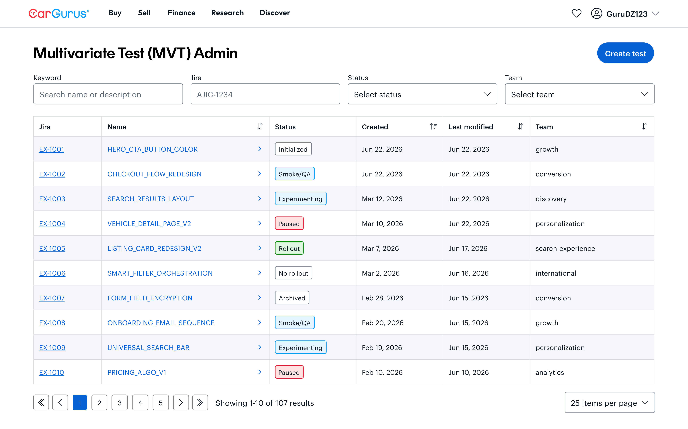
The old workflow was a straight line that couldn't represent validation, pausing, or a final outcome. The new one adds the states that were missing.
Old workflow
New workflow
An engineer creates the test, which starts it at Initialized. An analyst then ramps it to a small percentage of traffic, typically 1%, moving it into Smoke/QA to confirm it's behaving correctly before anyone relies on its data. Once it looks good, the analyst ramps it further into Experimenting, where it runs at real scale.
From either Smoke/QA or Experimenting, a test can move into Paused. This didn't exist before, and without it, any hold on a test caused data loss and made the surrounding results untrustworthy. With Paused, an analyst can stop a test cleanly, without corrupting what's already been collected.
When an analyst has enough signal, the test moves to Rollout if it should go live to everyone, or No Rollout if it shouldn't. Once engineering bakes the outcome into production, the test is moved to Archived and its life in the platform is done.
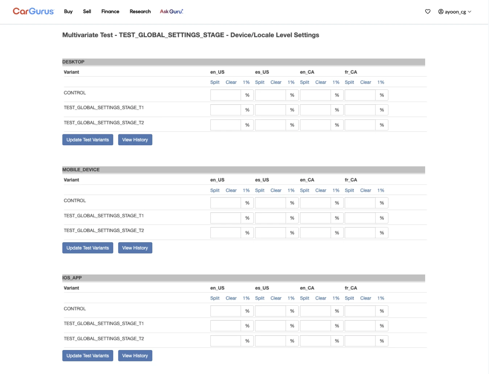
During workshops, analysts kept comparing this panel to tools like Optimizely, where allocation is controlled with sliders. To declutter the panel and match a mental model they already had, we landed on a slider UI that shows where a test's allocation stands at a glance, while still letting analysts type in an exact percentage manually.
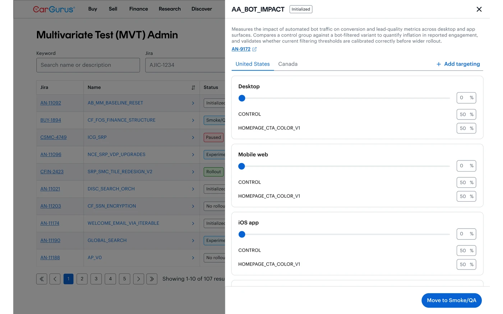
Initialized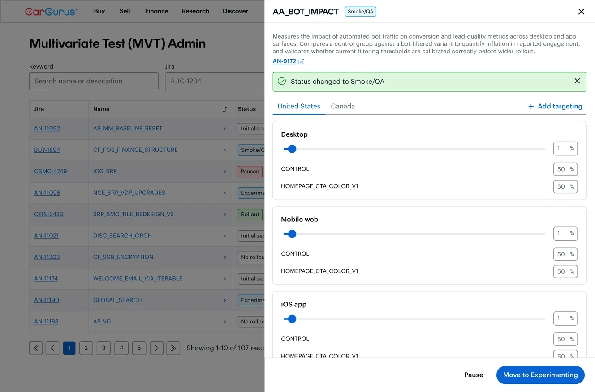
Smoke/QA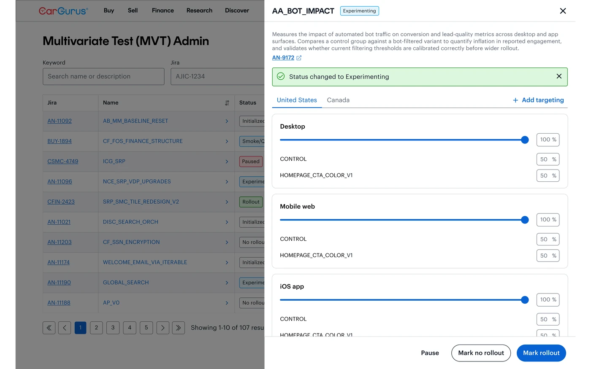
ExperimentingThe old form asked for everything at once. The redesign breaks test creation into a guided flow: test type, test details, variants, then target.
Before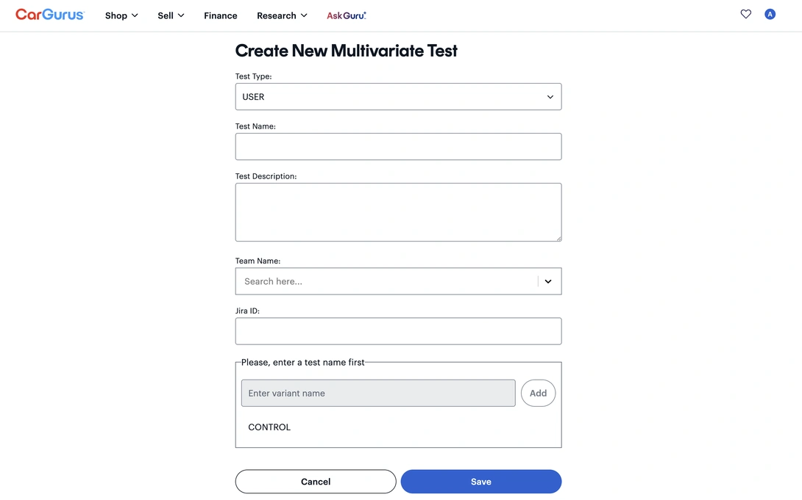
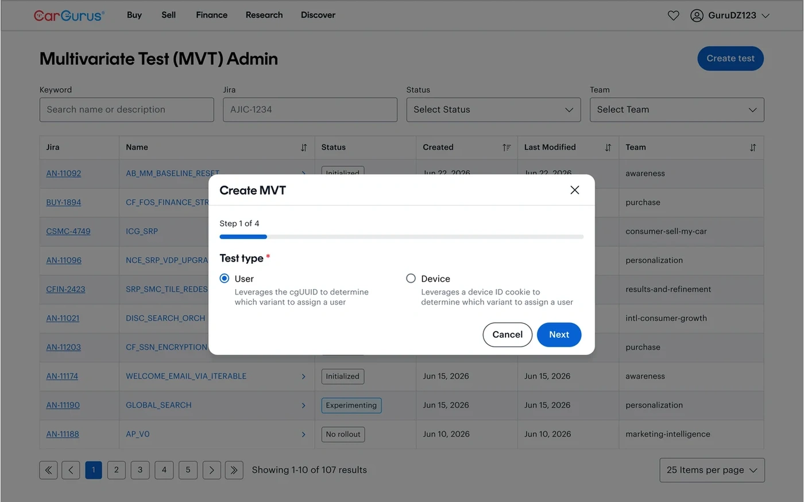
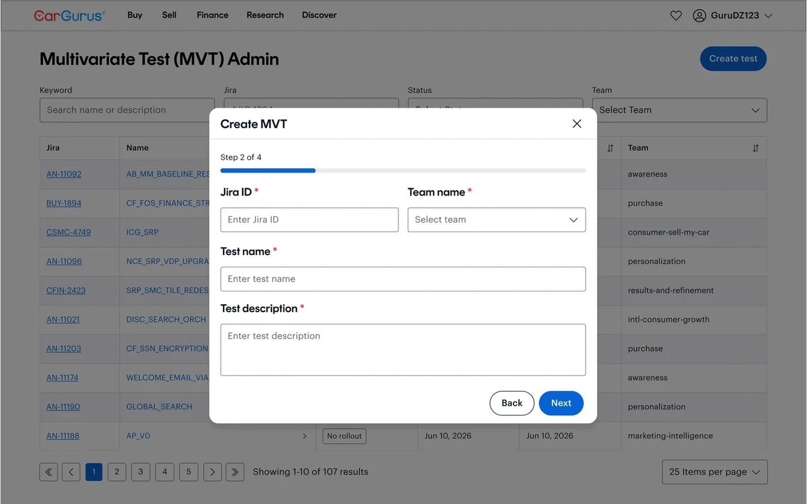
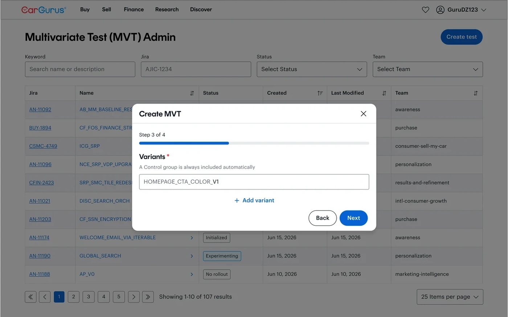
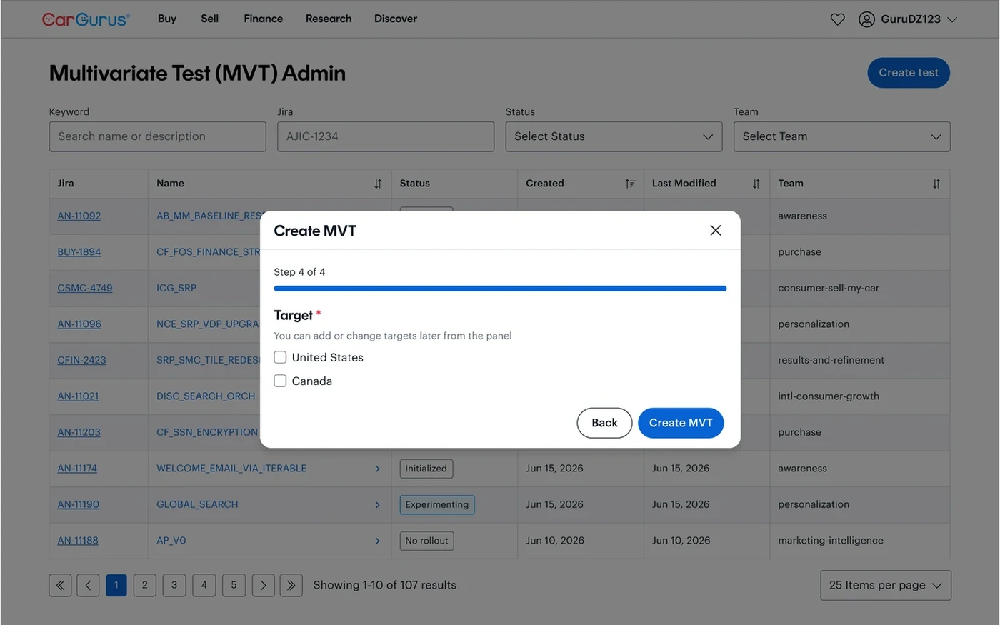